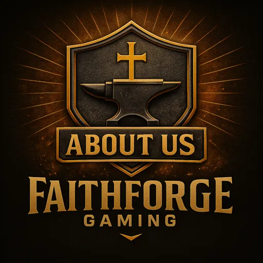

FaithForge Gaming is a biblically-based Christian gaming community where players come together to share faith, fellowship, and fun. We believe gaming can be more than just entertainment—it can be a forge that strengthens faith, builds character, and unites believers around the world.
We stand firmly on the Word of God and the teachings of Jesus Christ. Our community commits itself to the values and lessons of the New Testament, living out our faith not just in life, but also in our time online together. Our motto comes from Proverbs 27:17 — “As iron sharpens iron, so one person sharpens another.”
Our mission is to glorify God through gaming, fellowship, and outreach. We aim to create a safe, welcoming environment for believers to grow spiritually while enjoying the games they love. Every connection made, every victory shared, and every challenge faced together is an opportunity to reflect the light of Christ in the gaming world.
FaithForge offers weekly Bible studies, separate Men’s and Women’s chat groups, and faith-based discussions for all members. We encourage spiritual growth while building meaningful friendships rooted in love, truth, and accountability.
Our gaming community spans across many titles and genres—from creative building to competitive play. We host monthly community events in our most popular games and maintain active servers such as:
Each game community is led by a Channel Lead—a dedicated volunteer who helps organize events, moderate discussions, and support players. These leaders rotate every six months to ensure fresh ideas and shared responsibility within the FaithForge family.
We desire FaithForge to be a place of growth, safety, fellowship, hope, and unity—where Christian gamers from all walks of life can find belonging and purpose. Whether you’re exploring faith, deepening your walk with God, or simply seeking uplifting fellowship while gaming, there’s a place for you here.
FaithForge Gaming is more than a streaming community, it is a growing network of faith-first creators who want to use gaming, content, and digital influence to encourage others and glorify God. Our Content Creator Partnership Program is designed for creators who want to build alongside FaithForge through shared values, consistent content, and community involvement. We welcome streamers, video creators, short-form content creators, designers, editors, and other contributors who align with our mission. This partnership is built on more than promotion. It is about creating meaningful content, encouraging one another, supporting the FaithForge vision, and helping reach others through gaming and online media. Our goal is to build a Christ-centered creator network where content is not only entertaining, but uplifting, excellent, and impactful.